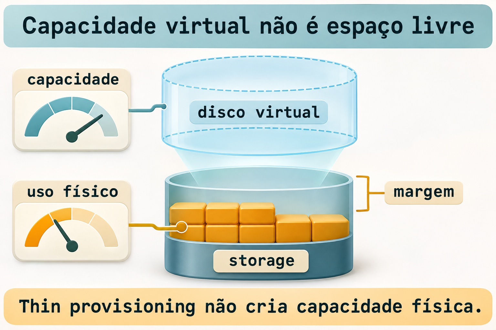

Aula 17.4 · Storage: capacidade, crescimento e movimento
O disco aparece maior no Proxmox, mas a pasta de dados continua com o mesmo espaço. Nesta aula você separa capacidade virtual, consumo físico e tamanho do sistema de arquivos, trabalhando somente num disco novo da VM 211.
Núcleo desta aula: crescer e mover discos exige conferir a referência no host e os dados dentro da VM.
| Ficha | |
|---|---|
| Módulo | M17 · Proxmox VE na prática, aula 4 de 7 |
| Quando | Semana 23 |
| Ao final | Criar um disco de dados, ampliar o ext4 e conferir um movimento entre storages |
| Pré-requisitos | Aulas 17.1–17.3; VM 211 disponível; backup autorizado e espaço físico |
| Duração | 100–130 min; o tempo de cópia depende do ambiente |
| Snapshot | Ponto anterior à mudança e backup independente no storage autorizado |
1 · Aquecimento
Você recebe um alerta de ocupação. Antes de ampliar, responda: acabou o espaço dentro da VM, a capacidade física do backend ou ambos?
- O tamanho configurado de um disco não informa sozinho quanto o backend já consumiu.
- Um filesystem menor pode existir dentro de um dispositivo maior.
- Um backup utilizável precisa continuar disponível se o storage de origem falhar.
Retome a configuração da VM 211 e marque o disco de boot, o drive de cloud-init e a interface de gerenciamento. Nenhum deles será substituído.
qm config 211
qm status 211
pvesm statusEstes comandos são do host Proxmox. Os comandos de filesystem desta aula pertencem ao terminal Linux dentro da VM 211.
2 · Por que importa
O storage pode atender muitas VMs. Um disco novo de laboratório continua consumindo recursos compartilhados; por isso você mede a margem antes de reservar ou escrever dados.
Thin provisioning permite apresentar uma capacidade virtual e alocar blocos físicos conforme o uso, segundo o backend. Não elimina limites, metadados, reservas nem alertas de ocupação.
Se a soma das promessas excede a capacidade real, várias VMs podem disputar o último espaço ao mesmo tempo. Apagar um arquivo no guest também não garante devolução imediata de blocos ao backend.


Ponte Windows
Aumentar o disco no hipervisor lembra aumentar um disco virtual e depois estender o volume no Windows. A primeira ação altera o dispositivo; a segunda adapta a estrutura que usa seus blocos.
Aqui o disco de dados terá ext4 diretamente no dispositivo, sem partição. Isso reduz as camadas do exercício; não descreve automaticamente o layout do disco de boot.
3 · Modelo mental
Pense em três perguntas, feitas em locais diferentes.
| Onde | Pergunta | Evidência |
|---|---|---|
| Backend | Quanto espaço físico ainda posso usar com margem? | Estado, capacidade e alertas do storage |
| Proxmox | A qual volume este slot aponta e qual capacidade apresenta? | Configuração da VM e tarefa concluída |
| Guest | Qual dispositivo é esse e quanto cabe no filesystem? | Serial, montagem e tamanho do ext4 |
O nome do storage é um identificador de configuração. Ele não é necessariamente o caminho de uma pasta, nem prova que o mesmo conteúdo pode ser armazenado em outro backend.
Decisão de segurança: identificaremos o novo disco pelo serial M17DATA, nunca por adivinhar que ele será o segundo nome alfabético.
Uma mudança na ordem dos discos pode mudar o nome apresentado pelo kernel. O serial configurado permite ligar a identidade do host à observação dentro da VM.

4 · Essencial
Rocky × Debian
O host Proxmox continua responsável por criar e mover volumes. Dentro da VM, a ferramenta depende do filesystem: ext4 usa ferramentas diferentes de XFS.
O disco novo será ext4, mesmo que o sistema Rocky da VM use XFS no boot. Não aplique o procedimento ext4 a um volume XFS ou a uma camada LVM.
| Ação | Ferramenta ou evidência |
|---|---|
| Ver capacidade e disponibilidade do backend | pvesm status |
| Conferir slots e referências | qm config 211 |
| Aumentar apenas o disco de dados | qm disk resize 211 scsi1 +1G |
| Crescer ext4 no disco identificado | resize2fs |
| Copiar e trocar a referência de storage | qm disk move |
Antes de começar: obtenha autorização para 4 GiB virtuais iniciais, crescimento de 1 GiB e consumo físico correspondente. Há ainda espaço para snapshots, backup e eventual segunda cópia.
O backend vm-hdd citado no plano precisa existir, estar ativo neste nó e aceitar imagens de VM. Se não estiver disponível, use outro storage real autorizado e registre a escolha.
Não crie um storage fictício para completar o roteiro. Um segundo backend é pré-requisito apenas para executar o movimento; sem ele, essa comparação permanece documental.
5 · Lab guiado
Passo 1 · Inventariar e proteger
Palpite: quais linhas distinguem o disco de boot, o cloud-init e o slot livre?
No host, leia tudo antes de criar o disco. Confira também configurações pendentes na interface da VM. O slot scsi1 precisa estar livre tanto na configuração atual quanto na pendente.
qm config 211
qm config 211 --current 1
qm pending 211
pvesm status
cat /etc/pve/storage.cfg
qm listsnapshot 211Saída esperada: a VM se chama m17-vm; você identifica seus discos existentes e nenhum ocupa scsi1. Os storages reais e os tipos de conteúdo estão visíveis.
Registre as linhas completas de boot, cloud-init e rede; elas serão comparadas depois. Se houver estado pendente desconhecido, pare para resolvê-lo com quem administra o lab.
Crie um snapshot com nome ainda inexistente e faça backup no destino já autorizado. PBS-LAB precisa estar ativo, configurado e com permissão; não invente credenciais ou retenção.
qm snapshot 211 m17-pre-storage || exit 1
vzdump 211 --storage PBS-LAB --mode snapshot --remove 0 || exit 1Verifique: ambas as tarefas terminaram sem erro; anote o identificador real do backup. Sem backend capaz de snapshot ou backup concluído, não siga com alterações neste lab.
Passo 2 · Acrescentar somente o disco novo
Palpite: o que deve mudar na configuração quando você cria um disco de dados?
No host, escolha o storage de imagens validado no passo anterior; digite seu identificador real. Desligue a VM de forma limpa e confirme que parou antes de continuar.
read -r DATA_STORE
qm shutdown 211 --timeout 120
qm status 211Só depois de confirmar o estado parado, execute a guarda. Ela recusa nome errado, variável vazia e slot existente; não substitui a conferência das pendências.
test -n "$DATA_STORE" &&
test "$(qm config 211 | sed -n 's/^name: //p')" = m17-vm &&
test "$(qm status 211)" = 'status: stopped' &&
! qm config 211 | grep -q '^scsi1:' &&
qm set 211 --scsi1 "$DATA_STORE:4,serial=M17DATA,discard=on" || { printf '%s\n' 'STOP: new disk creation not performed' >&2; exit 1; }
qm config 211Saída esperada: surge uma única linha scsi1 com o serial M17DATA e capacidade inicial de 4 GiB. As linhas registradas no Passo 1 continuam iguais.
Verifique: registre o identificador real do volume criado. Se a guarda recusou a operação, investigue; não remova um disco para liberar o slot.
qm start 211Passo 3 · Identificar, formatar e guardar uma prova
Palpite: um dispositivo sem filesystem é necessariamente o disco que acabamos de criar?
Entre na VM 211. Confira hostname, serial e árvore de dispositivos. Se as ferramentas de ext4 estiverem ausentes, instale o pacote e2fsprogs pelo gerenciador já conhecido da distribuição.
hostname
test "$(hostname -s)" = m17-vm || exit 1
lsblk -o NAME,TYPE,SIZE,FSTYPE,MOUNTPOINTS,SERIAL
ls -l /dev/disk/by-id/Digite em LAB_DISK o caminho completo e real do disco com serial M17DATA, preferencialmente seu link persistente. Não copie um nome de outro terminal ou de outra VM.
read -r LAB_DISK
test -b "$LAB_DISK" || exit 1
SIGNATURES=$(sudo wipefs -n "$LAB_DISK") || exit 1
test ! -e /mnt/m17-data &&
test -b "$LAB_DISK" &&
test "$(lsblk -dnro SERIAL "$LAB_DISK")" = M17DATA &&
test "$(lsblk -dnro TYPE "$LAB_DISK")" = disk &&
test "$(lsblk -nrpo NAME "$LAB_DISK" | wc -l)" -eq 1 &&
test -z "$SIGNATURES" &&
! findmnt -rn -S "$LAB_DISK" &&
printf '%s\n' 'M17DATA: blank whole disk verified' || { printf '%s\n' 'STOP: new disk checks failed' >&2; exit 1; }Saída esperada: a última frase aparece somente se serial, tipo, ausência de partições, assinaturas e montagem corresponderem. Revise visualmente lsblk e wipefs antes de formatar.
Se qualquer saída indicar dados anteriores, pare. O comando seguinte destrói estruturas existentes e só pertence ao disco novo já identificado; não use opção de força.
sudo mkfs.ext4 -L M17DATA "$LAB_DISK" || exit 1
sudo mkdir /mnt/m17-data || exit 1
sudo mount "$LAB_DISK" /mnt/m17-data || exit 1
printf '%s\n' 'm17-data: disposable evidence' | sudo tee /mnt/m17-data/evidence.txt
sudo sha256sum /mnt/m17-data/evidence.txt | tee "$HOME/m17-data.sha256"
findmnt /mnt/m17-data
df -hT /mnt/m17-dataVerifique: o filesystem é ext4 e contém a frase fictícia. A pasta deve ser nova e exclusiva deste lab; se já existir antes da criação, pare para conferir quem a usa.
Passo 4 · Ampliar dispositivo e ext4
Palpite: depois de aumentar o disco no Proxmox, o ext4 já vai mostrar mais espaço?
Guarde a prova e desmonte na VM. Uma montagem ocupada precisa ser investigada; não force a desmontagem.
sudo sha256sum -c "$HOME/m17-data.sha256"
sync
sudo umount /mnt/m17-data || exit 1No host, faça novo snapshot e backup com o disco de dados incluído. Confira se scsi1 não está marcado para exclusão de backup e se a tarefa incluiu seu volume real.
qm snapshot 211 m17-pre-grow || exit 1
vzdump 211 --storage PBS-LAB --mode snapshot --remove 0 || exit 1
qm shutdown 211 --timeout 120
qm status 211Com backup concluído, VM parada e espaço físico confirmado, aumente somente scsi1. A guarda verifica novamente nome e serial da configuração.
test "$(qm config 211 | sed -n 's/^name: //p')" = m17-vm &&
test "$(qm status 211)" = 'status: stopped' &&
qm config 211 | grep '^scsi1:' | grep -q 'serial=M17DATA' &&
qm disk resize 211 scsi1 +1G || { printf '%s\n' 'STOP: disk growth not performed' >&2; exit 1; }
qm config 211
qm start 211Na VM, redigite o caminho em LAB_DISK e reconfirme serial, ext4 e ausência de montagem. Variáveis não sobrevivem à abertura de outro shell ou ao reboot.
read -r LAB_DISK
lsblk -o NAME,TYPE,SIZE,FSTYPE,MOUNTPOINTS,SERIAL "$LAB_DISK"
test "$(hostname -s)" = m17-vm || exit 1
test -b "$LAB_DISK" || exit 1
test "$(lsblk -dnro SERIAL "$LAB_DISK")" = M17DATA &&
test "$(lsblk -dnro TYPE "$LAB_DISK")" = disk &&
test "$(lsblk -dnro FSTYPE "$LAB_DISK")" = ext4 &&
! findmnt -rn -S "$LAB_DISK" &&
sudo e2fsck -f "$LAB_DISK"
FSCK_RC=$?
printf 'fsck exit: %s\n' "$FSCK_RC"Se a checagem informar erro não corrigido, pare. Código 0 é íntegro; 1 indica correções realizadas e pede nova checagem antes de seguir. Não ignore um erro só porque o dispositivo cresceu.
Após uma checagem concluída com código 0, amplie o ext4 e monte novamente. Não há partição intermediária neste disco.
test "$FSCK_RC" -eq 0 && sudo resize2fs "$LAB_DISK" || { printf '%s\n' 'STOP: filesystem growth failed' >&2; exit 1; }
sudo mount "$LAB_DISK" /mnt/m17-data || exit 1
df -hT /mnt/m17-data
sudo sha256sum -c "$HOME/m17-data.sha256"Saída esperada: dispositivo e ext4 apresentam a capacidade ampliada; a prova continua válida. O espaço utilizável difere da capacidade nominal por estruturas e reservas do filesystem.
Verifique: registre tamanho anterior e posterior, serial e resultado do hash. Não tente diminuir o disco de volta; uma redução exige outro planejamento e não faz parte deste exercício.
Passo 5 · Mover quando existe destino real
Palpite: uma tarefa de cópia bem-sucedida prova que a VM usa o volume de destino?

No host, examine um segundo storage autorizado que aceite imagens neste nó e tenha margem para a cópia. Verifique também a compatibilidade de snapshots entre os backends.
pvesm status
cat /etc/pve/storage.cfg
qm config 211
qm help disk moveSem segundo storage: registre a origem real, a capacidade e quais requisitos faltam; explique onde mudaria a referência. Não execute o bloco de movimento e marque a prática como não realizada.
Com segundo storage: registre o volume de origem e digite em TARGET_STORE o identificador do destino, diferente da origem. Se snapshots impedirem a operação, pare; não apague sua proteção para forçar a cópia.
Antes de mover, guarde M17_SHARED_STORE no diário e confirme em pvesm status que a origem é o storage compartilhado do lab (Ceph RBD no desenho do curso). Se a origem for local, pare e reconcilie o inventário. As variáveis permanecem no mesmo terminal; não invente a origem ao voltar.
Na VM, desmonte a pasta; no host, desligue e confirme a parada. Execute o bloco somente depois da validação do destino e do backup do Passo 4.
M17_SHARED_VOLUME=$(qm config 211 | sed -n 's/^scsi1: \([^,]*\).*/\1/p')
M17_SHARED_STORE=${M17_SHARED_VOLUME%%:*}
pvesm status --storage "$M17_SHARED_STORE"
read -r TARGET_STORE
qm shutdown 211 --timeout 120
qm status 211test -n "$TARGET_STORE" &&
test "$(qm config 211 | sed -n 's/^name: //p')" = m17-vm &&
test "$(qm status 211)" = 'status: stopped' &&
qm config 211 | grep '^scsi1:' | grep -q 'serial=M17DATA' &&
qm disk move 211 scsi1 "$TARGET_STORE" --delete 0 || { printf '%s\n' 'STOP: disk move not performed' >&2; exit 1; }
qm config 211Saída esperada: a tarefa conclui, scsi1 aponta para o destino e o serial permanece. A origem preservada aparece como volume não usado; ela ainda ocupa espaço.
Verifique: compare as referências completas, confirme os discos protegidos do Passo 1 e confira a prova dentro da VM após iniciar. Se não executou o movimento, registre honestamente essa limitação.
A origem antiga fica preservada para revisão; este roteiro não manda excluir volumes não usados. Remover um deles pode apagar fisicamente seus dados.
Depois de observar o disco no destino local e registrar a prova, devolva scsi1 à origem compartilhada antes da 17.5. A VM continua desligada. --delete 1 remove somente a cópia de origem desta segunda transferência após concluí-la; não é um comando para apagar volumes unusedN.
m17_devolver_disco() {
[ -n "$M17_SHARED_STORE" ] || return 1
[ "$(qm config 211 | sed -n 's/^name: //p')" = m17-vm ] || return 1
[ "$(qm status 211)" = "status: stopped" ] || return 1
qm config 211 | grep '^scsi1:' | grep -q 'serial=M17DATA' || return 1
qm disk move 211 scsi1 "$M17_SHARED_STORE" --delete 1 || return 1
qm config 211
}
m17_devolver_discoConfira todas as linhas de discos, incluindo EFI, cloud-init e unusedN: nenhum volume pode permanecer em storage local para a migração ensinada na 17.7. Se a primeira transferência preservou uma cópia antiga compartilhada, registre-a sem apagá-la por nome presumido. Os snapshots seguintes serão feitos apenas depois deste retorno.
Passo 6 · Reboot e conferência completa
Palpite: depois do reboot, a falta de montagem significa perda dos dados?
No host, inicie a VM caso esteja parada; se já estiver ativa, faça reboot limpo. Não reinicie o nó Proxmox.
qm status 211
qm config 211Reboot de conferência: escolha apenas a ação adequada ao estado que acabou de medir. Aguarde a inicialização e entre novamente na VM.
qm start 211qm reboot 211Na VM, identifique outra vez o disco por serial e monte a pasta. Não alteramos a configuração persistente de montagem; é esperado precisar montar manualmente após o reboot.
lsblk -o NAME,TYPE,SIZE,FSTYPE,MOUNTPOINTS,SERIAL
read -r LAB_DISK
test "$(lsblk -dnro SERIAL "$LAB_DISK")" = M17DATA &&
sudo mount "$LAB_DISK" /mnt/m17-data || exit 1
findmnt /mnt/m17-data
df -hT /mnt/m17-data
sudo sha256sum -c "$HOME/m17-data.sha256"Saída esperada: o disco ampliado monta como ext4 e o hash confirma a mesma evidência. A referência no host corresponde ao backend atual, com ou sem movimento realizado.
Verifique: descreva três provas separadas: capacidade do dispositivo, capacidade do filesystem e integridade do arquivo. Uma não substitui as outras.
6 · Quebre e conserte
Todas as falhas abaixo ficam no disco fictício da VM 211. Não altere o disco do sistema, permissões do backend ou volumes de outras VMs.
Quebra 1 · Pasta vazia depois de desmontar
Sintoma: a pasta existe, mas a prova parece ter sumido. Desmonte apenas a montagem do lab e olhe a pasta.
sudo umount /mnt/m17-data
ls -la /mnt/m17-data
findmnt /mnt/m17-dataInvestigação: verifique a ausência de montagem e localize o disco pelo serial; não escreva uma nova prova na pasta vazia. Causa: você está vendo a pasta do filesystem de boot, sem o disco de dados sobre ela. Conserto: monte novamente o disco identificado.
test "$(lsblk -dnro SERIAL "$LAB_DISK")" = M17DATA &&
sudo mount "$LAB_DISK" /mnt/m17-data || exit 1
sudo sha256sum -c "$HOME/m17-data.sha256"Verifique: o hash volta a conferir sem restaurar ou recriar o arquivo. Prevenção: confira a montagem antes de interpretar uma pasta vazia como perda de dados.
Quebra 2 · Dados visíveis, escrita recusada
Sintoma: ler funciona e escrever falha. Remonte somente a pasta do lab em leitura.
sudo mount -o remount,ro /mnt/m17-data
sudo touch /mnt/m17-data/probe.txtInvestigação: compare as opções de montagem com permissões de arquivo; o erro pode estar abaixo da permissão do usuário.
findmnt -no SOURCE,FSTYPE,OPTIONS /mnt/m17-dataCausa: a montagem está somente para leitura; mudar permissões de pasta não remove essa condição. Conserto: restaure o modo de leitura e escrita apenas nessa montagem.
sudo mount -o remount,rw /mnt/m17-data
sudo touch /mnt/m17-data/probe.txt
sudo rm /mnt/m17-data/probe.txt
sudo sha256sum -c "$HOME/m17-data.sha256"Verifique: a escrita funciona e a prova original mantém o hash. Prevenção: diagnostique opções e saúde do filesystem antes de alterar permissões recursivamente.
Quebra 3 · Medida certa na camada errada
Sintoma: alguém afirma que a pasta tem o tamanho do disco de boot. Produza a medida equivocada e compare.
df -hT /
df -hT /mnt/m17-data
lsblk -o NAME,SIZE,FSTYPE,MOUNTPOINTS,SERIALInvestigação: associe cada caminho ao dispositivo realmente montado; confira o serial do disco de dados. Causa: a medida da raiz foi usada como se representasse a montagem de dados. Conserto: corrija o registro, usando o caminho montado e sua origem; nenhuma capacidade precisa ser alterada. Verifique: seu relatório distingue a raiz do ext4 de dados, sem inventar números de saída. Prevenção: escreva sempre qual objeto foi medido e em qual camada.
7 · Armadilhas
- Confundir espaço virtual disponível com margem física do backend.
- Usar o nome variável do kernel como prova de identidade do disco.
- Rodar uma ferramenta ext4 em XFS, ou esquecer uma camada de partição/LVM em outro layout.
- Apagar volumes não usados antes de conferir referência ativa, hash e backup.
- Prometer que um snapshot sempre desfaz um redimensionamento físico. O suporte e os limites dependem do backend; restauração do backup deve ser planejada.
Decida 1
O disco cresceu no host, mas o ext4 continua menor. O que fazer?
A. Rodar novamente o comando de crescimento do disco até a pasta aumentar. B. Formatar novamente o disco que contém os dados. C. Conferir serial, layout e filesystem, depois ampliar a camada ainda menor.
Decida 2
A tarefa de movimento concluiu e sobrou um volume não usado. Qual a próxima ação?
A. Conferir a referência ativa e os dados; tratar a exclusão antiga como ação separada. B. Trocar o disco de boot para a cópia antiga. C. Apagar todos os volumes não usados do storage.
8 · Quiz
- Por que um disco virtual de 5 GiB não garante 5 GiB físicos livres no backend?
- Qual identidade liga o disco novo configurado no host ao dispositivo no guest?
- Qual camada intermediária foi deliberadamente omitida no disco de dados deste lab?
- O que o resultado do hash prova depois do crescimento? O que ele não mede?
- Por que manter a origem antiga aumenta temporariamente o consumo?
- Sem segundo backend autorizado, como registrar o Passo 5 corretamente?
9 · Lembrete
Flashcards: capacidade virtual promete blocos; capacidade física limita o backend; filesystem organiza o espaço apresentado; hash compara o conteúdo da prova.
!explica Por que aumentar um disco no Proxmox não amplia automaticamente todo filesystem?
!feynman Explique capacidade virtual, espaço físico e filesystem usando o disco M17DATA.
!quiz Faça perguntas sobre serial, resize, move e validação de dados na VM 211.10 · Checklist e fechamento
- [ ] Registrei a configuração original e preservei boot, cloud-init e rede.
- [ ] Identifiquei o disco novo pelo serial antes de formatar.
- [ ] Ampliei o dispositivo e o ext4, conferindo o hash.
- [ ] Registrei se o movimento ocorreu ou ficou documental por falta de destino.
- [ ] Guardei o identificador do backup e as referências atuais de volume.
- [ ] Confirmei o reboot e restaurei montagem de leitura e escrita.
Último exercício: escreva um registro com identidade da VM, serial, origem, destino se usado, capacidades antes/depois, hash e limitações. Quem o ler deve distinguir uma cópia planejada de uma cópia executada.
Limpeza: remova apenas a prova temporária da Quebra 2, caso tenha sobrado. Preserve disco, evidência, hash e VM 211 para as próximas aulas; o CT 212 permanece para a 17.5.
Não apague o backup, o template 210, volumes não usados ou snapshots para ganhar espaço sem análise. A limpeza final dos recursos do módulo tem seu próprio ponto de conferência.
11 · Na vida real
Num atendimento real, primeiro observe: identifique a montagem afetada, o dispositivo, suas camadas e a política de storage. Uma solicitação de capacidade não autoriza formatar um volume existente.
Defina janela, responsáveis, backup restaurável, margem e critério de sucesso. Um filesystem com dados importantes pode exigir procedimento diferente, inclusive parada de aplicação.
A missão desta seção é somente de leitura: desenhe as camadas de um volume autorizado e indique onde mediria cada capacidade. Não execute o lab num servidor de cliente.
12 · Aprofundar quando quiser
- Storage no Proxmox VE: conteúdo, backends e capacidades.
- Manual de qm: confira a sintaxe instalada antes de mover ou redimensionar.
- Documentação do kernel sobre ext4: estrutura e características do filesystem.
Leia também os manuais locais de resize2fs, e2fsck, lsblk e findmnt; eles correspondem às ferramentas efetivamente instaladas.
Gabarito comentado
Decida 1: C. A capacidade do dispositivo e a do filesystem são medidas distintas. Identificar o layout evita aplicar a ferramenta ao disco errado ou esquecer uma camada.
Decida 2: A. Conclusão da tarefa e referência ativa precisam concordar com a prova dentro da VM. A cópia antiga não deve ser excluída por uma regra genérica.
- A capacidade virtual é apresentada ao guest; o backend possui consumo físico, reservas e outras cargas. Thin provisioning pode prometer mais do que o espaço disponível.
- O serial
M17DATA, conferido também no dispositivo que será formatado. Tamanho e ordem de nomes sozinhos não bastam. - A partição: ext4 foi criado diretamente no disco novo. Em outro layout seria preciso examinar partição e eventual LVM.
- Prova que o conteúdo da evidência coincide com o hash registrado; não mede capacidade nem testa todos os arquivos da VM.
- Há uma cópia no destino e o volume de origem preservado; até a exclusão aprovada, ambos continuam consumindo espaço.
- Registrar pré-requisito ausente, origem real e comparação planejada; declarar que nenhum movimento foi executado.
Este material foi conferido documentalmente; os números e resultados devem ser obtidos no seu laboratório. Não há alegação de execução destas operações em VMs nesta entrega.
← Aula 17.3 · Contêiner LXC · Índice das aulas · Plano do curso: 17.5 em diante →